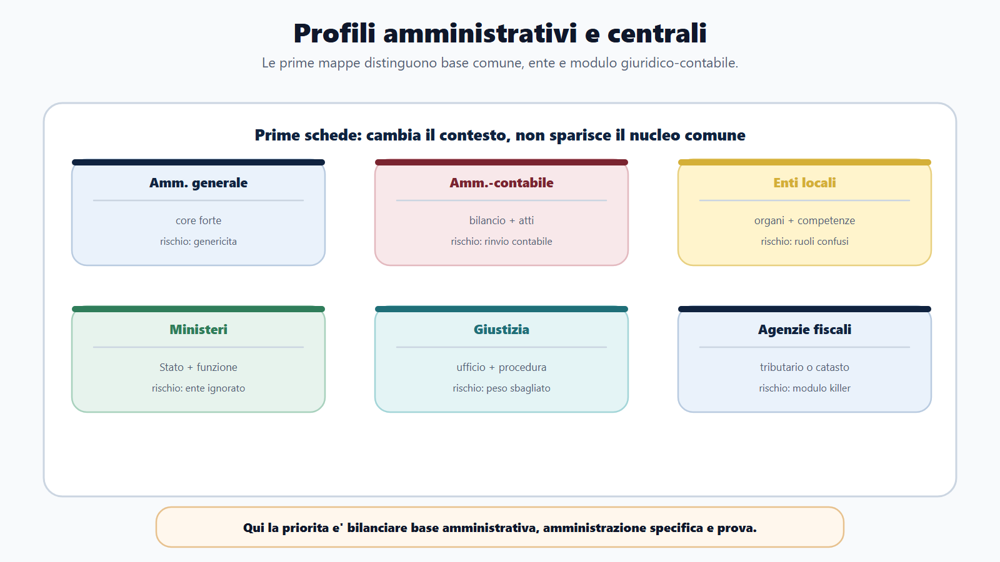
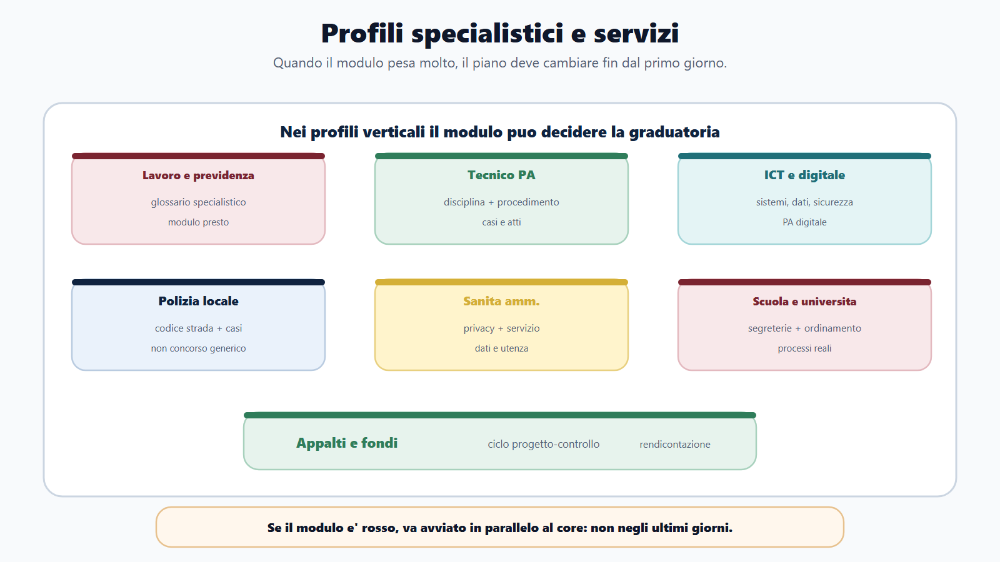
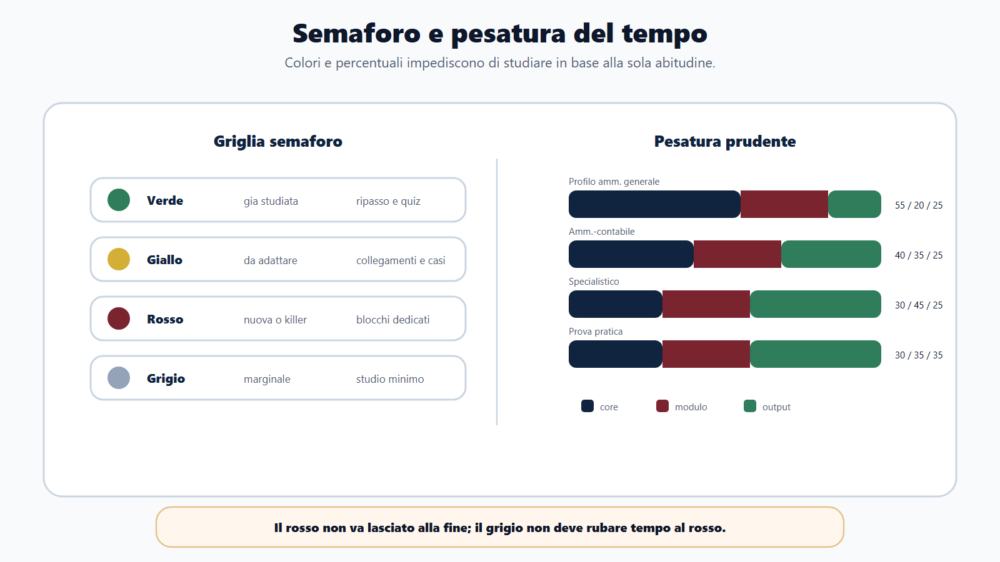
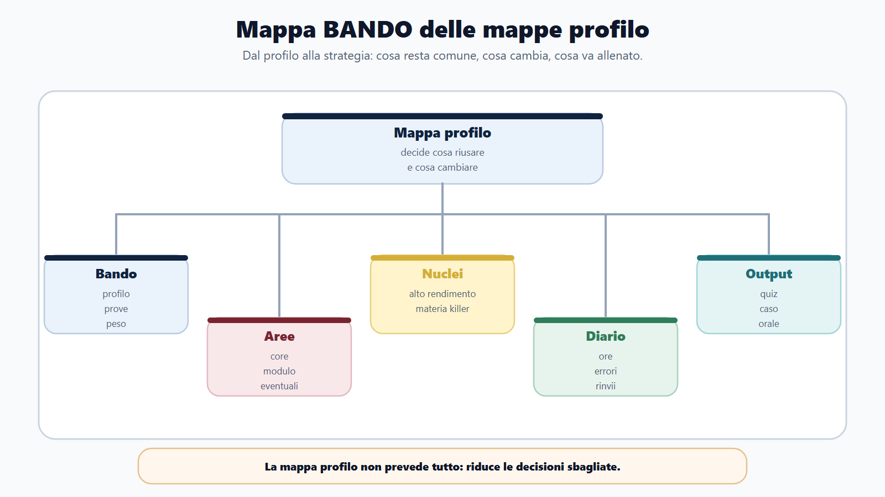
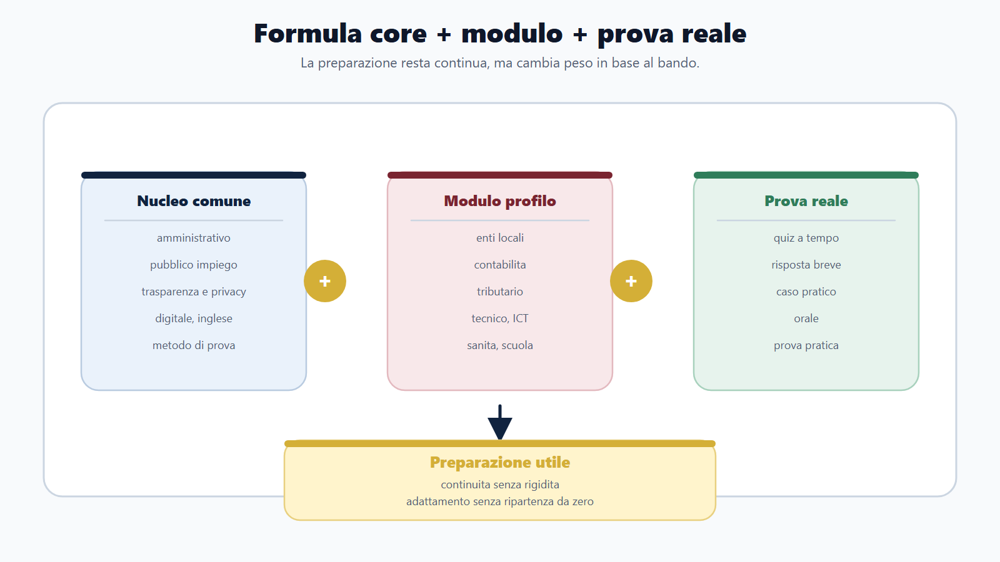
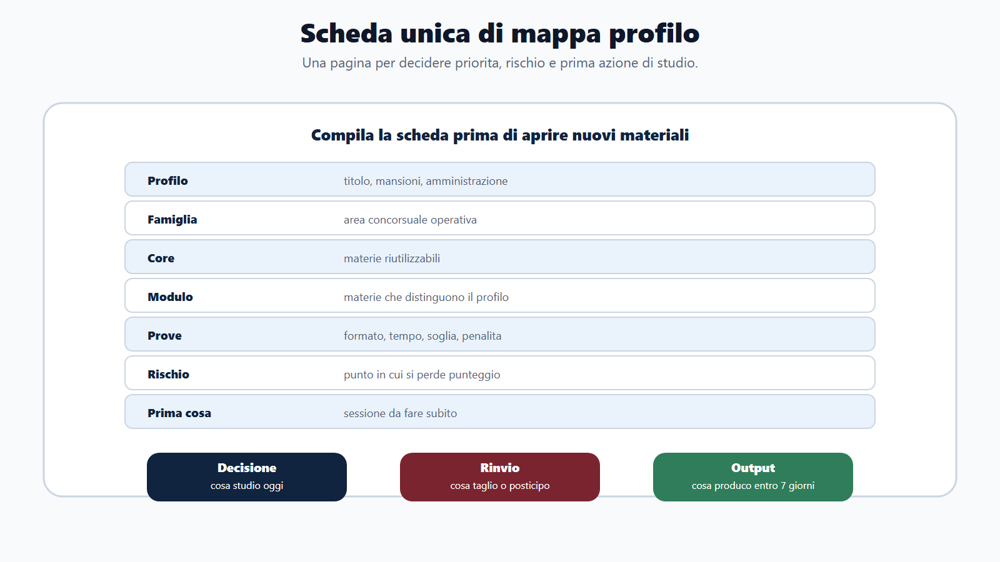

VOL-01 · Capitolo 20
Parte IV · Adattare il metodo
Mappe profilo: cosa resta
comune e cosa cambia
Che cosa posso riutilizzare e che cosa devo cambiare per questo profilo? Senza questa domanda si ripete lo stesso piano, oppure si abbandona tutto ciò che si è già studiato. La mappa mantiene continuità senza rigidità.
Schema
Profili amministrativi e centrali

Schema
Profili specialistici e servizi

Schema
Semaforo e pesatura tempo

Schema
Mappa bando mappe profilo

Schema
Core modulo prova reale

Schema
Scheda unica profilo

01 · Formula
Core più modulo più prova reale
Preparazione utile = nucleo comune + modulo profilo + allenamento sulla prova reale. Se manca uno dei tre, la preparazione si sbilancia. La mappa non offre una previsione perfetta: aiuta a prendere una decisione migliore. Il campo più importante è il rischio: spesso il concorso non si perde per ciò che non si studia, ma per ciò che si studia nel peso sbagliato.
Nucleo comune
Ciò che ricorre: amministrativo, pubblico impiego, trasparenza, digitale, inglese, logica, metodo di quiz, scritto, orale e casi. Si riusa, si mantiene, si adatta.
Modulo profilo
Ciò che rende quel concorso diverso: enti locali, contabilità, tributario, giustizia, sanità, scuola, vigilanza, tecnico, ICT, codice della strada, fondi, appalti.
Prova reale
Adatta tutto al formato: quiz, risposta breve, caso, elaborato, orale, prova pratica, situazionale. Senza questo, core e modulo restano studio passivo.
02 · BANDO
La mappa alimenta il diario, non lo sostituisce
Usa una scheda unica per ogni concorso. Profilo e mansioni, non solo il titolo. Famiglia. Core. Modulo. Prove. Difficoltà. Rischio. Prima cosa. Da non eccedere.
| Domanda | Azione | Se la salti | |
|---|---|---|---|
| B — Bando | Quale profilo e quale prova? | Estrai dati da bando e allegati. | Compili una mappa sul titolo, non sulle mansioni. |
| A — Aree | Quali aree sono core e quali modulo? | Due colori sul programma. | Tratti tutto come nuovo o tutto come già fatto. |
| N — Nuclei | Dove posso prendere più punti? | Ordina le priorità. | Studi ciò che ti rassicura. |
| D — Diario | Sto studiando in proporzione al peso? | Controlla ore, errori e rinvii. | La mappa resta un disegno, il calendario non cambia. |
| O — Output | Che prodotto devo generare in prova? | Simula nel formato corretto. | Leggi anche dove serve un atto o un caso. |
Preparazione utile = nucleo comune + modulo profilo + allenamento sulla prova reale.
Se manca il core, il modulo resta fragile. Se manca il modulo, arrivi generico. Se manca la prova reale, hai studiato senza saper produrre. La mappa serve a tenere i tre insieme.
03 · Mappe 1–4
Amministrativo, contabile, enti locali, ministeri
Per ciascuna: quasi sempre, rischio, prima cosa, da non eccedere. La strategia è un esempio di uso, non un orario fisso.
| Profilo | Rischio | Prima cosa | Da non eccedere |
|---|---|---|---|
| Amministrativo generale. Quasi sempre: amministrativo, impiego, trasparenza, procedimento, informatica, inglese. | Sapere definizioni senza saperle usare in ufficio. Programma ampio e genericità. | Procedimento, provvedimento, accesso, pubblico impiego. Ogni istituto collegato a un esempio di lavoro. | Manuali troppo specialistici non collegati al bando. |
| Amministrativo-contabile. Quasi sempre: amministrativo, contabilità, bilancio, atti, impiego. | Rimandare la contabilità alla fine. Lessico tecnico. | Ciclo bilancio-entrata-spesa-controllo. Non separare atto e copertura finanziaria. | Contabilità avanzata non richiesta. |
| Enti locali. Quasi sempre: ordinamento, amministrativo, impiego, trasparenza. | Confondere organi politici e competenze gestionali. | Organi, atti, competenze, procedimento, bilancio base. Consiglio, giunta, sindaco, dirigente o ufficio? | Costituzionale oltre la parte utile all’ente. |
| Ministeri e funzioni centrali. Quasi sempre: amministrativo, costituzionale, impiego, organizzazione PA. | Ignorare l’amministrazione specifica. | Struttura dello Stato, amministrativo, impiego; poi un blocco sul ministero. | Ordinamenti settoriali non presenti nel bando. |
04 · Mappe 5–8
Giustizia, fisco, previdenza, tecnico
Qui il modulo non è accessorio. Se il profilo è giuridico-tributario, i blocchi di tributario partono subito. Se è tecnico, la tecnica va tradotta in atto e procedimento.
| Profilo | Rischio | Prima cosa | Da non eccedere |
|---|---|---|---|
| Giustizia. Quasi sempre: amministrativo, impiego, organizzazione giustizia, servizi d’ufficio. | Studiare procedura in modo sproporzionato o troppo poco. | Programma ufficiale e peso delle materie processuali. Distinguere cultura amministrativa, processuale e operativa di ufficio. | Procedura avanzata se il bando chiede solo elementi. |
| Agenzie fiscali. Quasi sempre: amministrativo, organizzazione agenzia, impiego; tributario o catasto nel modulo. | Trattare tributario o catasto come materie secondarie. | Modulo specialistico in parallelo al core, non dopo. | Amministrativo generale oltre il peso del bando. |
| Previdenza, lavoro, vigilanza. | Restare sul diritto amministrativo e trascurare lavoro e previdenza. | Glossario e nuclei del modulo: contributi, tutela, prestazione, vigilanza, accertamento. | Pubblico impiego oltre la quota richiesta. |
| Tecnico con prova amministrativa. | Sapere la tecnica ma non tradurla in atto o procedimento. | Per ogni tema: problema, atto o procedura, responsabilità. | Teoria tecnica non spendibile in prova. |
05 · Mappe 9–13
ICT, polizia locale, sanità, scuola, fondi
Identità di settore forte. La mappa serve a non prepararle come un concorso comunale qualunque, né come una materia privata scollegata dalla PA.
| Profilo | Rischio | Prima cosa | Da non eccedere |
|---|---|---|---|
| ICT e digitale | Informatica generica senza collegarla alla PA. | Mappa sistemi-dati-servizi-sicurezza. Autenticazione, documento, protocollo, interoperabilità, conservazione. | Strumenti non citati dal bando. |
| Polizia locale | Prepararla come un normale concorso comunale. | Requisiti, prove e modulo di settore. Casi: controllo, verbale, ordinanza, sanzione. | Amministrativo teorico non collegato a casi. |
| Sanità amministrativa | Sottovalutare dati sensibili e organizzazione del servizio. | Privacy, accesso, servizio al cittadino, organizzazione base. Dire troppo è un errore grave. | Disciplina clinica non richiesta. |
| Scuola, ATA, università | Ignorare ordinamento e processi di segreteria. | Capire se il bando chiede scuola, università o ricerca. Esempi di domanda, graduatoria, protocollo, servizio. | Diritto scolastico o universitario avanzato se non previsto. |
| Appalti, PNRR, fondi | Studiare solo la gara e non esecuzione e rendicontazione. | Ciclo fabbisogno-affidamento-esecuzione-controllo. Ogni domanda nel punto giusto del ciclo. | Fondi UE avanzati se il bando non li chiede. |
06 · Adattare
Le mappe sono modelli: il bando può deviare
Cinque passaggi: leggi profilo e mansioni; evidenzia le materie già nel nucleo; cerchia le specialistiche; segna prova, durata, punteggio, soglia e penalità; trasforma la mappa in calendario. «Elementi di» non significa materia facile: significa capire quale livello chiede la commissione. «Con particolare riferimento a» è nucleo ad alto rendimento. Se c’è prova teorico-pratica, non basta leggere.
Verde
Già studiata e riutilizzabile. Ripasso, quiz, richiamo attivo. Non la lasci all’ultima settimana, ma non la rifai da zero.
Giallo
Conosciuta ma da adattare al profilo. Collegamenti, casi, domande orali. È il ponte tra core e modulo.
Rosso
Nuova o specialistica. Blocchi dedicati, fonti mirate, drill. Non va lasciata agli ultimi giorni.
Grigio
Presente ma marginale o incerta. Studio minimo fino a conferma. Non deve rubare tempo al rosso.
07 · Tempo
Quote prudenti, non orari fissi
Servono a evitare una distorsione: continuare a studiare ciò che ti rassicura e rinviare ciò che ti seleziona. Adattale al bando. In un profilo già in parte studiato il modulo e le prove pesano di più del core.
| Situazione | Core | Modulo profilo | Prove / output |
|---|---|---|---|
| Amministrativo generale | 55% | 20% | 25% |
| Amministrativo-contabile | 40% | 35% | 25% |
| Specialistico fiscale, lavoro, tecnico | 30% | 45% | 25% |
| Con prova pratica o caso | 30% | 35% | 35% |
| Profilo già in parte studiato | 25% | 45% | 30% |
Compilare la mappa e poi non usarla. Tabelle e colori, calendario identico: ore a sensazione, materiali a umore, quiz casuali. La mappa serve solo se produce decisioni: che cosa studio oggi, che cosa rinvio, che cosa alleno, che cosa entra nel diario.
08 · Caso guidato
Da istruttore comunale a funzionario tecnico
Hai già preparato un concorso da istruttore amministrativo comunale. Ora un bando per funzionario tecnico in un ente locale. Restano amministrativo, impiego, trasparenza, privacy e contratti. Si aggiungono urbanistica, edilizia e lavori pubblici. La preparazione precedente non si butta: si converte.
Riparto dal tecnico
«Lascio amministrativo alla fine, tanto l’ho già studiato». Perdi il verde, tratti i contratti come già chiusi, arrivi ai casi senza procedimento e responsabilità.
Semaforo e casi
Amministrativo, impiego, trasparenza, privacy: verde. Contratti: da verde o giallo ad applicativa, perché nei profili tecnici può pesare. Urbanistica, edilizia, lavori: rosso. Casi: permesso, autorizzazione, affidamento, verifica, responsabilità. Simulazioni nel formato del bando.
09 · Verifica
Due domande da saper spiegare
Che cosa significa distinguere nucleo comune e modulo profilo?
Significa separare ciò che posso riutilizzare tra più concorsi da ciò che rende specifico il bando che sto preparando. Il nucleo comune comprende materie e competenze ricorrenti, come amministrativo, pubblico impiego, trasparenza, digitale, inglese e metodo di prova. Il modulo profilo comprende le materie che dipendono dall’amministrazione e dal ruolo. La preparazione efficace nasce dal bilanciamento tra questi due blocchi e dall’allenamento sulla prova reale.
Se ho già studiato diritto amministrativo, è risolto per tutti i concorsi?
No. Puoi riutilizzare la base, ma devi adattarla. In un ente locale si collega ad atti, organi e servizi. In un profilo tecnico ad autorizzazioni, contratti e responsabilità. In un’agenzia fiscale a procedimenti e funzioni dell’agenzia. La materia resta, ma cambia l’uso in prova.
10 · Mini-esercizio
Compila la mappa, poi guarda il calendario
Se il calendario non cambia nulla, la mappa non è stata usata. Se mancano tre o più risposte alla checklist di avvio, non sei ancora nella fase di studio: sei ancora nella fase di decodifica.
| Campo | Che cosa deve produrre |
|---|---|
| Profilo, amministrazione, famiglia, prova principale | Identikit, non un titolo isolato. |
| Materie verdi, gialle, rosse, grigie | Decisioni di tempo, non colori decorativi. |
| Modulo profilo e rischio principale | Il delta e il punto in cui puoi perdere anche studiando molto. |
| Prima sessione di domani | Un blocco concreto, non «iniziare il manuale». |
| Output entro 7 giorni | Quiz, caso, orale o simulazione nel formato del bando. |
11 · Checklist di avvio
Prima di un nuovo concorso
Se mancano tre o più risposte, non sei ancora nella fase di studio: sei ancora nella fase di decodifica. La mappa non sostituisce questa verifica: la rende visibile.
| Controllo | Perché conta |
|---|---|
| Ho letto profilo e mansioni? Ho distinto core e modulo? | Il titolo del concorso non basta; la famiglia senza delta non produce piano. |
| Ho individuato la materia killer? Conosco formato, durata e punteggio? | È dove si perde anche studiando molto; il formato decide l’output. |
| Serve banca dati, quiz, casi, orale o prova pratica? | Senza questo alleni lo strumento sbagliato. |
| Che cosa posso riutilizzare? Che cosa studio da zero? | Verde e rosso: continuità senza rigidità. |
| Ho eliminato approfondimenti fuori bando? Ho programmato output misurabili? | Il grigio non deve mangiare il rosso; senza output la mappa resta un disegno. |
12 · Da tenere ferme
Cinque regole, con il perché
1. La mappa profilo traduce il bando in una strategia, perché senza di essa o ripeti lo stesso piano o ricominci da zero.
2. Il nucleo comune evita di ricominciare da zero, perché una parte della preparazione è capitale riutilizzabile.
3. Il modulo profilo dà precisione, perché è ciò che distingue famiglia, ruolo e prova.
4. Pesa ogni materia rispetto alla prova reale, perché il concorso si perde spesso per il peso sbagliato, non per la pagina mancante.
5. La mappa serve solo se cambia il calendario, perché colori e tabelle senza decisioni restano decorazione.
Prossimo capitolo
Come scegliere i moduli integrativi
Dal delta al volume: libro base più uno specialistico per famiglia, non un manuale per ogni bando. Il secondo modulo è eccezione, e va motivato.